Create a free account to upload and stage your photos.
Already have an account?
English
Deutsch
Nederlands
Español
Français
Italiano
Português
Русский
中文
日本語
한국어
Free virtual staging
Stage this in .
Rooms Staged
Users Served
and counting...
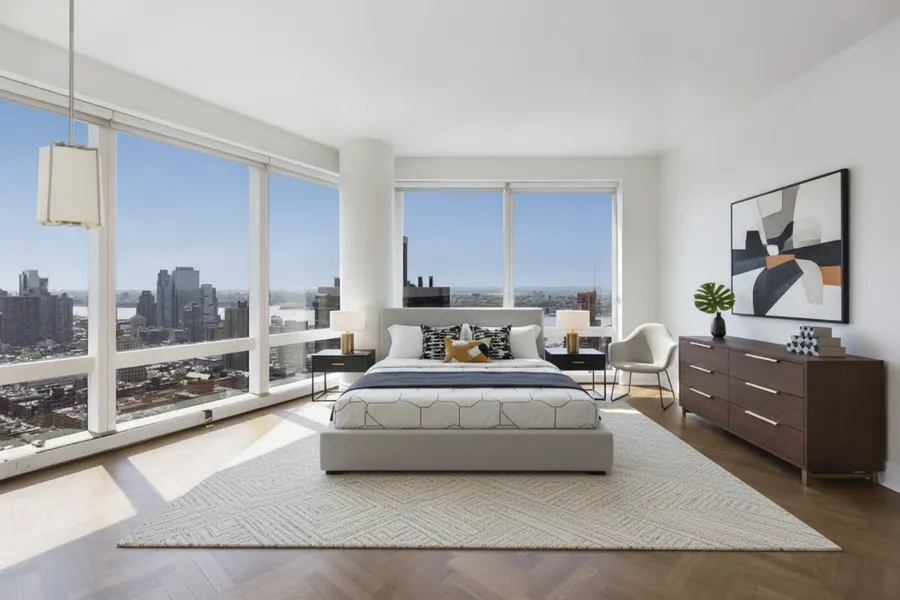
Every look here is one real render of the same empty room.
Trusted by agents at:
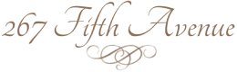
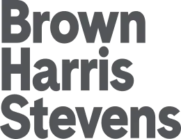
Click to see what staging does
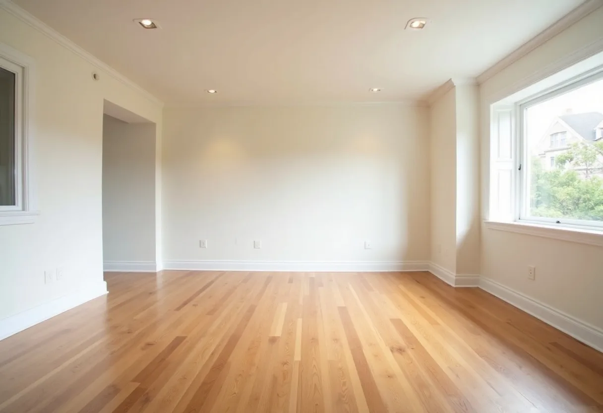
What virtual staging is, and why it sells
Almost every buyer starts online, so your listing photos are the real first showing. Empty or dated rooms are hard to read; people can’t judge scale or picture living there. Staging gives each room a clear purpose and a pull, which is why agents have always relied on it.
Empty rooms photograph smaller and colder than they are
Staging shows the intended use of every space
Stronger photos earn more clicks, saves, and showings
Demoing Stagify at a Compass office in New York
Upload a photo, pick the room type and one of seven styles, and Stagify furnishes it in about eight seconds. Need changes? Remove the existing furniture, add a custom prompt, or mask one area to adjust it without starting over.
7 styles plus custom prompts and furniture removal
Mask-edit any part of a result without redoing it
Full copyright, yours to use on the MLS or in ads
Walking a room of agents through their first staged listing
Agents market every listing in minutes instead of waiting on a staging crew. Sellers stage their own photos without hiring anyone. Buyers preview a renovation before they commit. And with AI Designer, you can turn a floor plan into a furnished plan view — or step inside any room on it for a photorealistic render.
Agents: list sooner and close more
Sellers & buyers: no software, no designer needed
AI Designer: agentic room staging
Sitting down one-on-one to stage an agent’s photos
There’s no software to install and nothing to learn. Anyone on the team can open Stagify in a browser, upload a listing photo, and have it staged in seconds, whether on a laptop at the office or a phone in the field.
No design skills or software needed
Works in any browser, on any device
Every agent can stage their own listings
A brokerage team’s first look at Stagify
Don’t fall behind
How often agents use AI tools
68%of agents already use AI in their business.
82%of agents say clients responded positively to technology in the buying and selling process
Upload the photo, pick the room and a style, and Stagify furnishes it. This is the flow every plan starts in.
Let an AI stage your space
With the AI Designer, chat to stage, redesign, and iterate on any room until it looks listing-ready. (Stagify+ Exclusive)
Stage with exact precision
In the new Masking Studio, highlight the areas to restage, add your own furniture, and everything else stays pixel-perfect. (Stagify+ Exclusive)
Fix the photo the listing opens with
The Exterior Studio changes the time of day, clears grey skies and takes out cars and bins. The house stays untouched. (Stagify+ Exclusive)
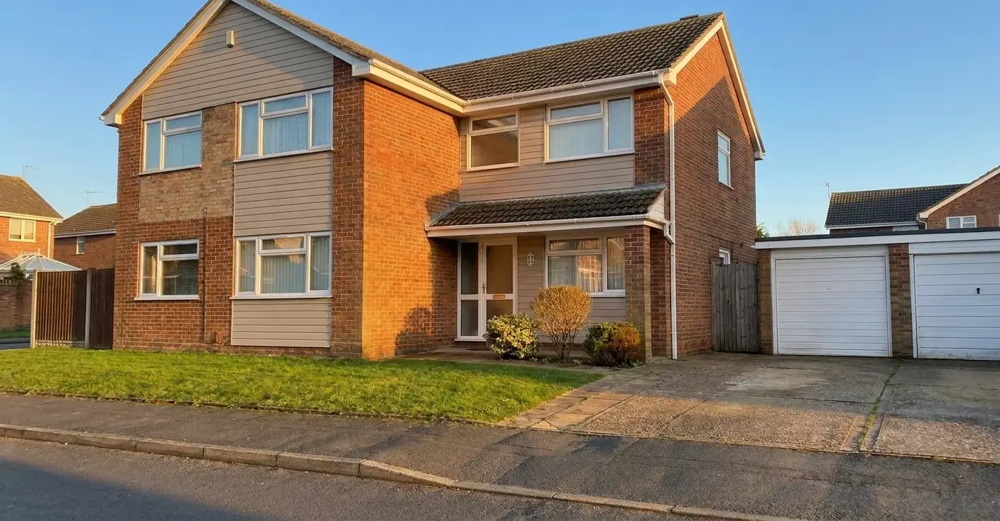
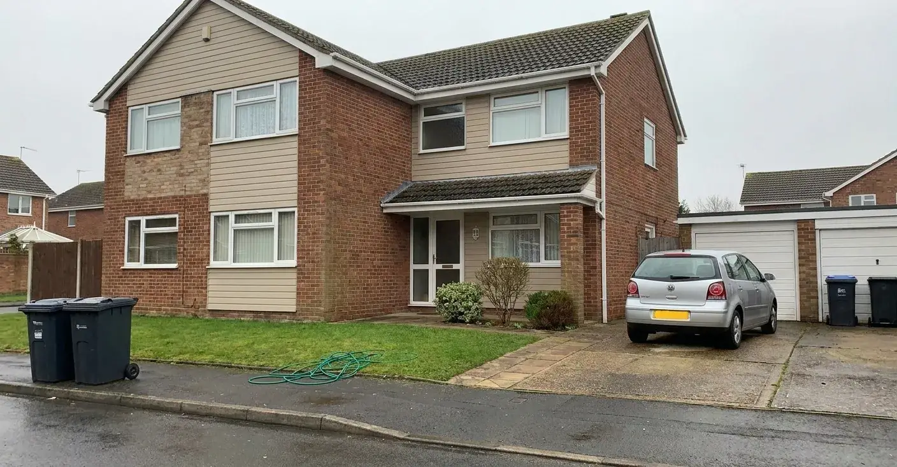
BeforeAfter
‹›
Every room you stage is saved for you
Your gallery keeps every staged room, the settings that produced it, and the links you have shared with clients.
Your gallery7 staged rooms
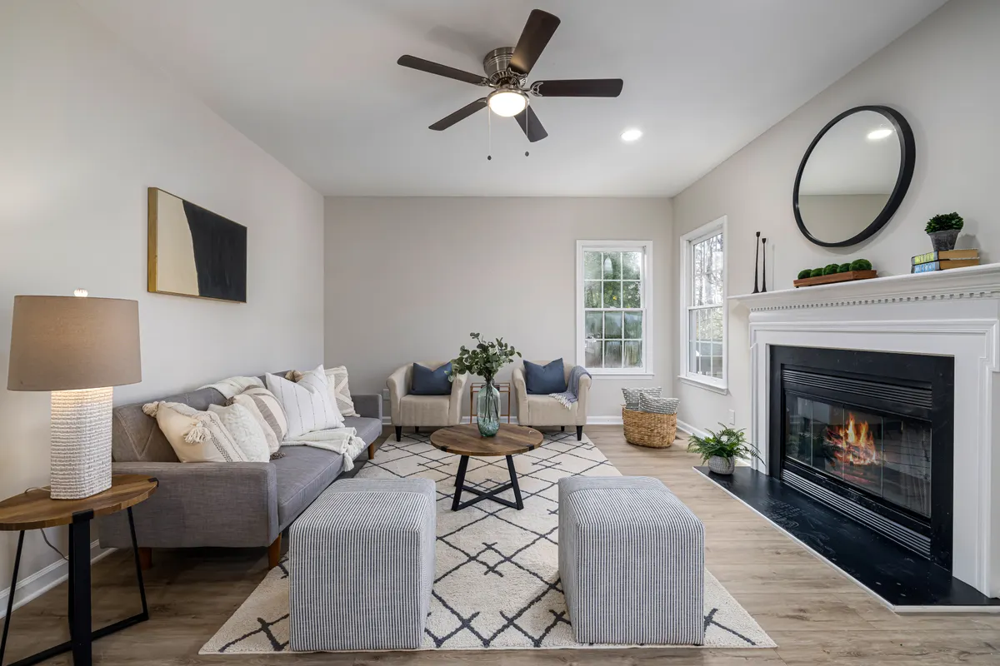
412 Rosewood LaneMar 14
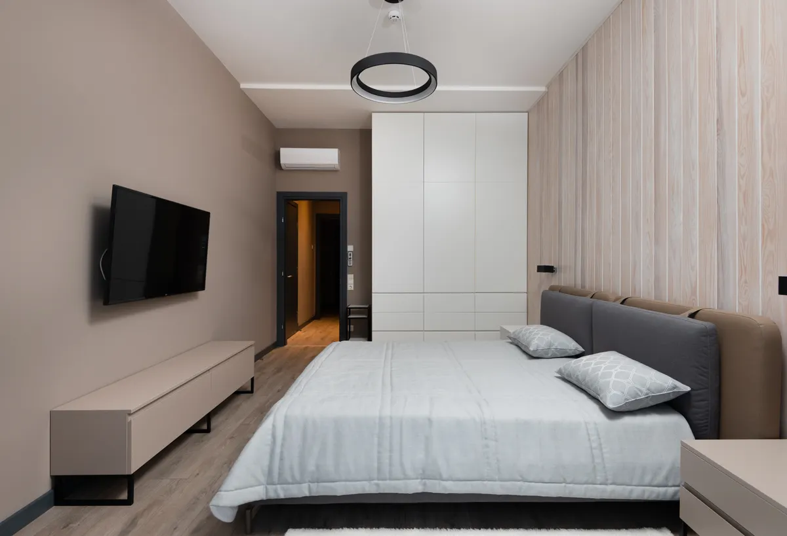
88 Harborview DriveMar 13
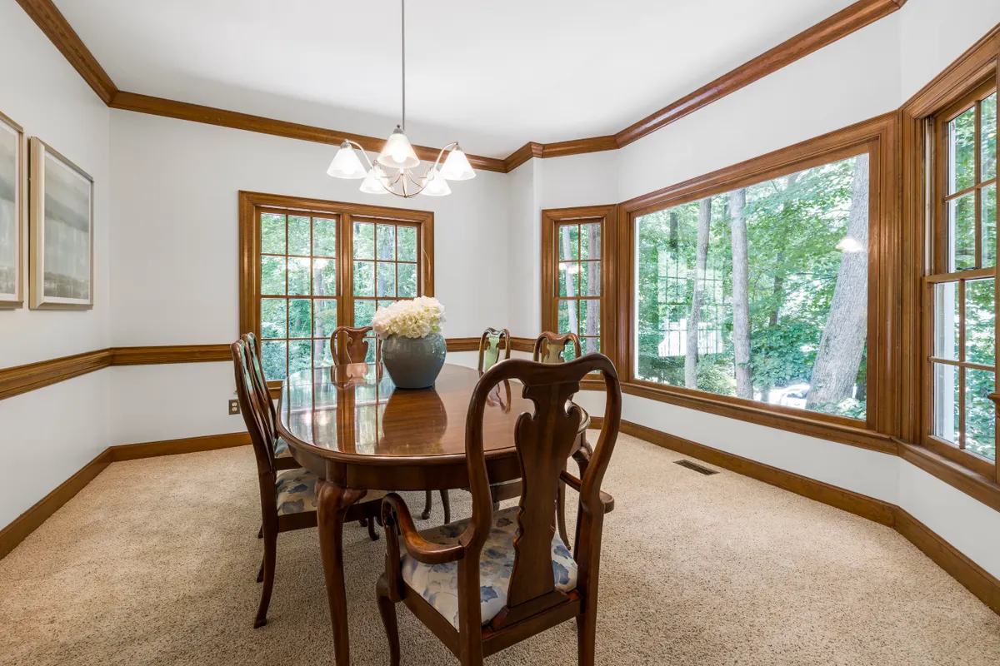
1207 Ashford CourtMar 11
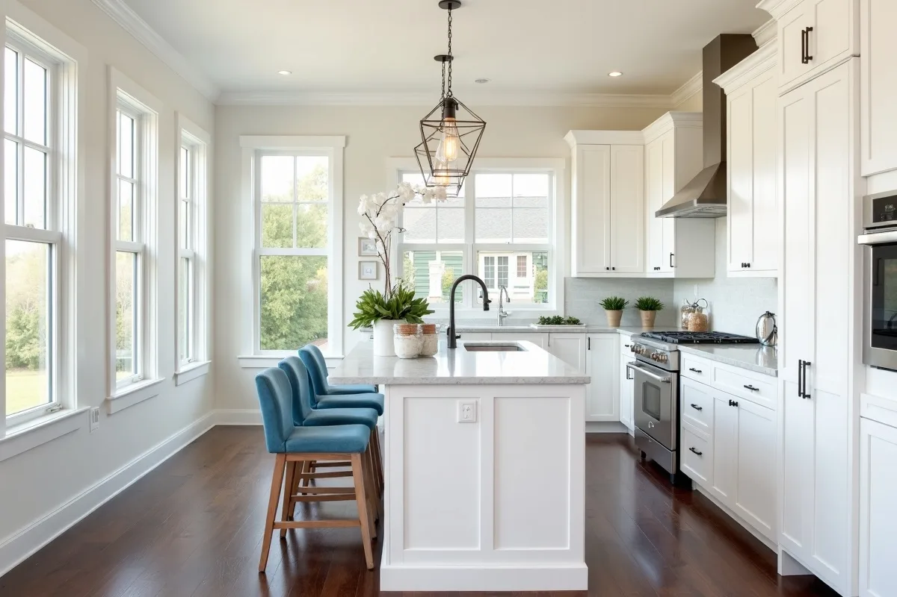
27 Pinehurst WayMar 10
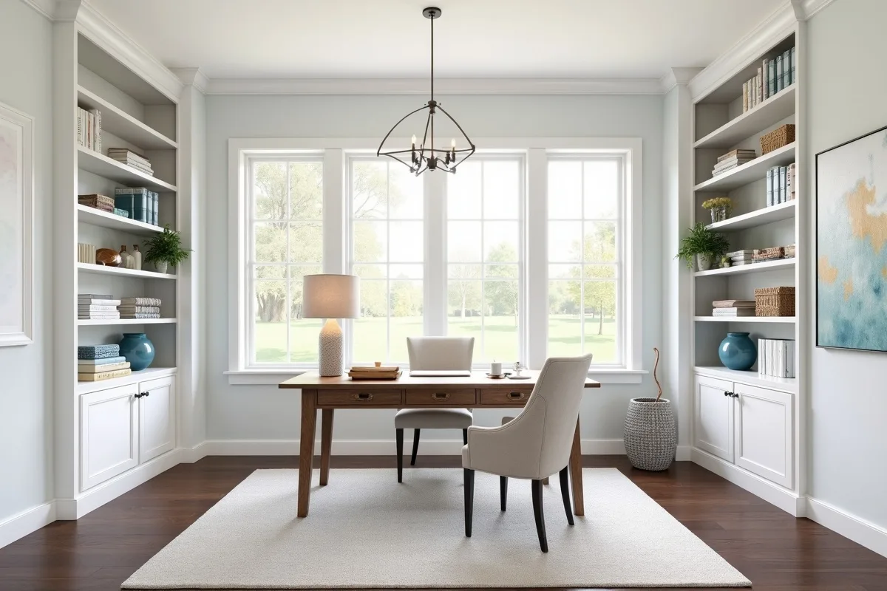
915 Marlow StreetMar 9
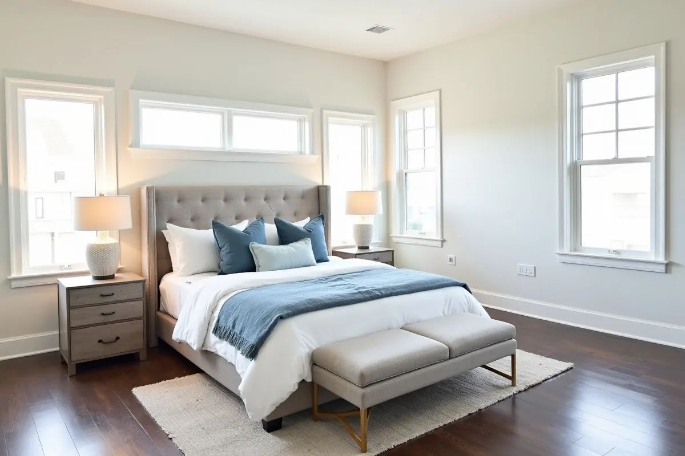
64 Ellery RoadMar 7
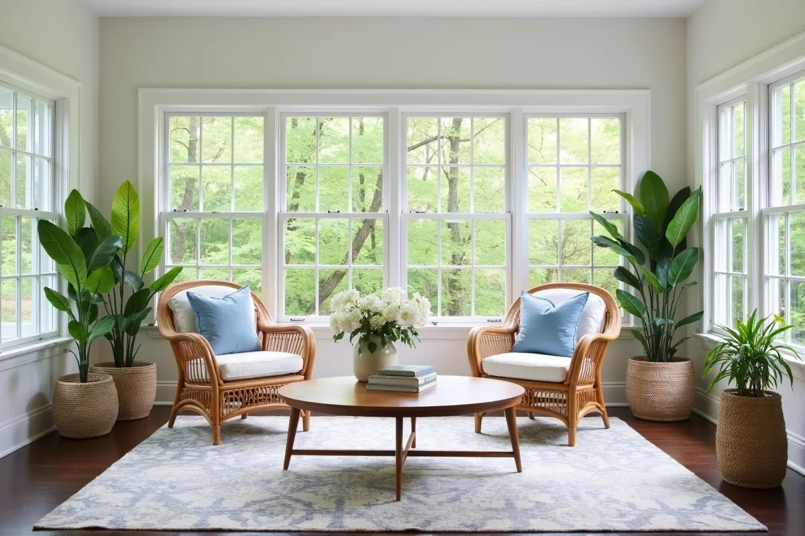
1841 Cypress BendMar 5
What agents are saying
When I tried Stagify for the first time, I was honestly blown away. I realized I could just use my phone, skip the expensive photographer, and still have stunning results. It’s a game-changer for my listings, and the price is amazing!
Justin Stern (Broker)Tahari RealtyManhattan, NYC
Stagify fits right into how I already work. I’ll upload a listing photo between showings and it’s staged before I’m back at my desk. My clients are always impressed by how polished the final photos look.
Andy Eras (Broker)Centennial PropertiesManhattan, NYC
Stagify makes the process feel effortless. You upload a photo of an empty room, wait a few seconds, and suddenly the space has personality. It’s simple, clean, and actually useful.
Travonte TaylorCompassBrooklyn, NYC
What impressed me most about Stagify was how practical it is. It’s not just another AI tool that looks cool for a second. It takes something agents, renters, and property owners deal with all the time and makes it faster and easier.
Jack SashTahari RealtyManhattan, NYC
I could see Stagify being huge for dorms, apartments, and listings. Empty rooms are hard to picture, but once they’re staged, the space instantly feels more real. It makes a big difference when you’re trying to imagine yourself living there.
Jaden LanderRockSolid ManagementManhattan, NYC
Stagify makes something that used to feel complicated incredibly simple. The results come back fast, the platform is easy to use, and being able to see an empty space fully staged in seconds is genuinely impressive.
Jaime CastroDouglas EllimanMiami, FL
I’m staging spaces all day, so speed matters. Stagify makes the whole process quick and easy, and the UI is super clean. I can get what I need without overthinking it.
Thomas ChimberCompassManhattan, NYC
1 / 7
How it compares to traditional staging
120
Traditional staging
Cost$10,000$2,000–$5,000+ per home, often billed monthly until it sells
Turnaround10 weeks1–3 weeks to schedule, deliver, and install
Stagify.ai
Cost$0Free to start, stage at no cost
TurnaroundAbout 8 seconds per photoJust upload a photo from anywhere
Based on $2,000 per home, the low end of the usual range, and two weeks from booking to installed.
Why choose us?
Stagify.ai compared with four other ways to stage a listing, across six factors.
Factor
Stagify.ai
Speed
~8 seconds
1–3 weeks
1–3 days
2–4 hours a photo
Instant
Cost per listing
$0, or $11.99 a month
$2,000–5,000
$550–850
An afternoon of your time
$0
Trying a different look
Free, as often as you like
Billed by the hour
Billed per image
More of your time
Nothing to try
Photo quality
Near-photoreal renders
Photographs of real rooms
Visible AI tells
As good as your retoucher
An empty room
You own the photos
Yes
The photographer’s
Licensed, not owned
Yes
Yes
Real furniture at the showing
No
Yes
No
No
No
Go further with Stagify+
Stagify+
For individuals
$11.99/ month
Remove existing furniture from rooms
AI Designer: agentic staging process
Masking tool to edit any area
Higher-quality image model
Multiple variations per generation
Furniture references: stage with pieces you choose
Virtual staging digitally furnishes a photo of an empty or dated room so buyers can see what the space could become. Nothing structural changes: the walls, windows, floors and proportions stay exactly as photographed, and only furniture and decor are added. It does the same job traditional staging does with a moving truck, in seconds instead of weeks. It is now standard practice on listings that would otherwise photograph as empty boxes.
TurnaroundHow fast is it?
About 8 seconds per photo. Complex rooms and heavily detailed styles can take a little longer, but you are waiting seconds, not days, which is long enough to try three styles on the same room while you decide which one sells it. There is no queue, no booking and no back-and-forth with a stager: you upload, pick a look, and download.
PricingWhat does it cost?
You can stage for free, with no card. Stagify+ is $11.99 a month and unlocks the higher-quality image model, multiple variations per render, furniture removal, the Masking Studio and the AI Designer. For teams there is Enterprise: everyone on your company email is covered automatically, and you pay per generation instead of per seat. For comparison, physically staging a home usually runs $2,000 to $5,000.
The StudiosWhat else can Stagify do?
Quite a lot. The AI Designer redesigns a whole room conversationally, so you can ask for a warmer palette or a bigger sofa and keep refining. The Masking Studio gives pixel-level control over which areas may change. The Exterior Studio works on curb appeal rather than interiors. The Listing Studio takes a whole set of photos through in one pass and produces a link you can send a seller for sign-off. Everything you make lands in your gallery.
ControlHow much control do I have over the result?
As much as you want. Pick a preset style and you are done in one click. Choose “Custom” and you can describe the look in your own words. Open the Masking Studio and you can paint exactly which parts of the photo are allowed to change, attaching specific furniture to each area, so anything you did not select stays untouched. The AI Designer sits in between: describe what you want changed, look at the result, and refine it in conversation.
PhotosWhat kind of photo works best?
Wide, bright and level. Shoot from a corner so two walls and plenty of floor are visible, keep the camera roughly chest height, and let in as much natural light as you can. Empty or lightly furnished rooms give the AI the cleanest canvas, though Stagify+ can remove existing furniture first. Avoid tight crops, heavy fisheye distortion, and photos where the floor is barely in frame, since there is nowhere to place furniture convincingly.
DisclosureCan I use these photos in an MLS listing?
Yes, and virtual staging is standard practice, but disclose it. Most MLSs and local rules ask that a digitally furnished photo be labelled as such, usually in the caption. Stagify can stamp “Virtually staged” onto the image for you, on any plan. Because only furniture and decor change, and never the structure of the room, the photo stays an honest representation of the space. Check your own board for the exact wording it expects.
PrivacyWhat happens to the photos I upload?
They travel over an encrypted connection, get processed, and are not kept permanently on our servers. Renders you save go to your own gallery, which only you can see unless you share a link. We do not sell personal information, and you keep ownership of both your uploads and the images Stagify generates. We share data only with the providers needed to run the service, such as the AI and payment processors, which the Privacy Policy lists.
Why StagifyHow is this different from other tools?
Most tools do one of these three things well. Stagify does all three: it is cheap enough to stage on a whim, conversational enough to redesign a room rather than merely decorate it, and precise enough to control the result pixel by pixel. Add the exterior and whole-listing workflows, eleven languages, full copyright on everything you generate, and no ads or per-image fees, and you get a tool you can use on every listing instead of saving for the hero shot.
Every room on this plan is a question. Select one and its answer appears here.
Up to 5 reference photos of furniture or decor to feature in the staged room
Adds a small “Virtually staged” note to the bottom-right of the finished photo, in your language. It is part of the image, so it travels with the file wherever you publish it. It does not replace the disclosure your MLS may require in the listing remarks.
Paint over any part of the photo, then describe the change you want
Adds a small “Virtually staged” note to the bottom-right of the finished photo, in your language. It is part of the image, so it travels with the file wherever you publish it. It does not replace the disclosure your MLS may require in the listing remarks.
Label style
SmallLarge
Be very specific about location and placement, for example: “put the sofa flush against the middle of the back wall.”
Optional: a photo of furniture or decor to place in the masked area